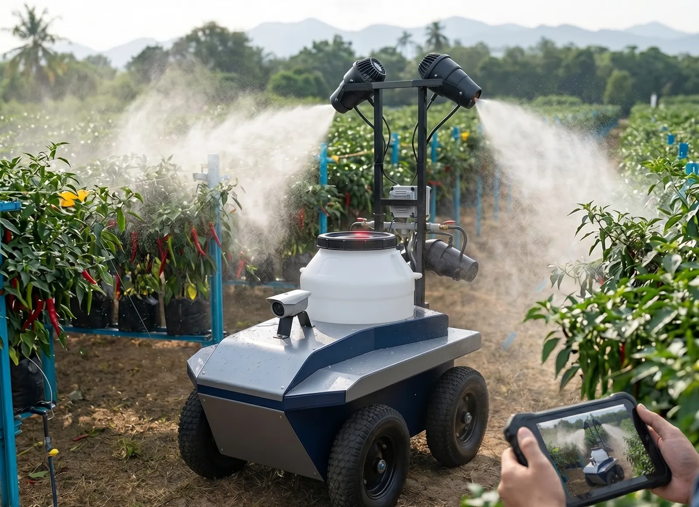
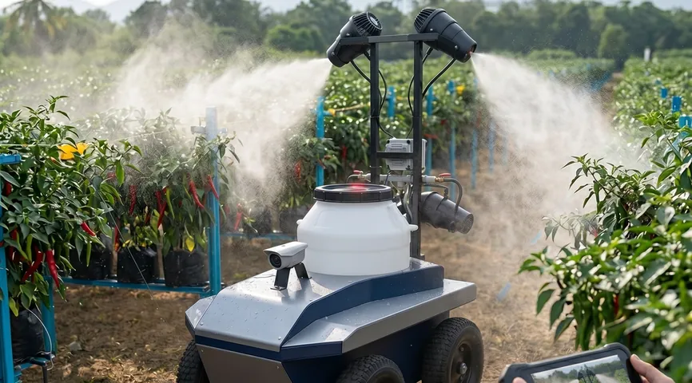
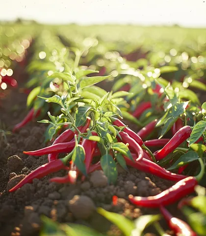
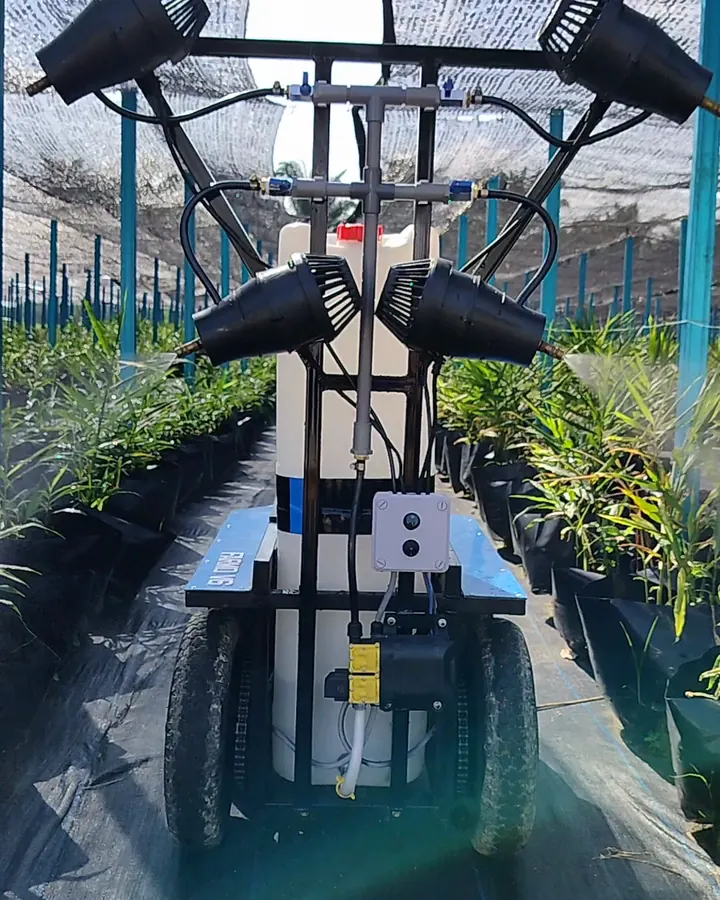
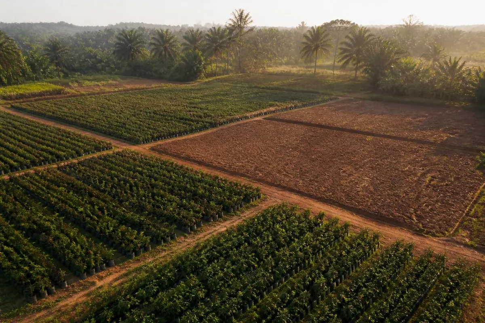
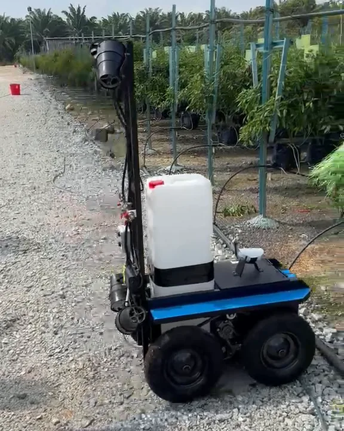
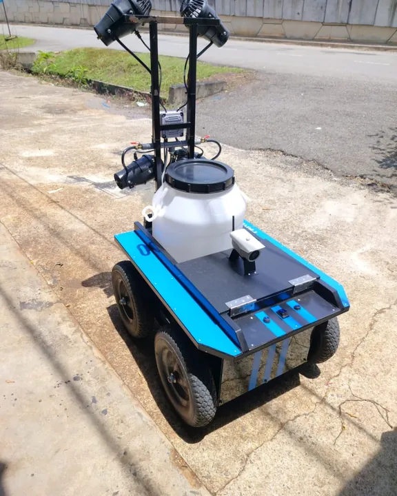

Land + AI + Grants
Future farming, built to scale.
Blue Sky Farms brings together land access, physical AI robots and grant support in one farming model — so growers can start faster and run their farms with less manual work.

- Crop spraying
- Built to inspect crop health
- Designed for at-a-glance monitoring
The BSF model
Three parts that remove the biggest barriers to starting a farm.
-
Land access
Start without buying land.
Growers farm on land managed by Blue Sky Farms, so the biggest upfront cost is already handled.
-
Physical AI robots
Less manual work in the field.
Our robots are built to take on repetitive field work — spraying, crop checks and monitoring — alongside your team.
-
Grant support
Lower your setup cost.
We help growers find and apply for Malaysian government agricultural grants.
Land × AI × Grants = farming built to scale.
Our AI solution
A physical AI robot, crop-health detection and a farm dashboard, designed to work together.
-

Illustration
Automate
Field work, mechanised.
A wheeled physical AI robot that carries its own tank and pump down the crop rows, misting plants on both sides as it moves. Built to run the same pass consistently, row after row.
-

Detect
Crop health, flagged early.
A vision system built to inspect plants along each row and flag early signs of pests or disease for a closer look. It is designed to support your team's judgement, not replace it.
-
Monitor
Your farm, at a glance.
A simple dashboard designed to bring farm status, weather and spraying plans together in one view, so it is easier to decide what needs attention next.
See it in action
Our machine at work in the field.
Footage: Blue Sky Farms × Farmotic

Land access
Land is the biggest barrier to farming. We start there.
Blue Sky Farms manages more than 50 agricultural and industrial land plots across Malaysia, owned and through joint ventures. Growers in our programme farm on this land instead of buying their own, and landowners can partner with us to develop theirs.
Talk to us about land
For investors and partners
Growing Malaysia's local food supply with land, AI and grant support.
Blue Sky Farms is building a farming model designed to make local farming faster to start and easier to scale. We work with investors, landowners and partners who share that goal. Our investor materials are available on request.
Investor enquiriesWho we are
A farm technology team based in Malaysia.
Blue Sky Farms is an agritech team based in Kuala Lumpur, Malaysia. We combine land access, physical AI robots and grant support into one farming model built for Malaysian growers. Our focus is practical technology that fits the way farms already run.


Talk to our team
Questions about land, our robots or grant support? Message us on WhatsApp or reach us below.
Company
BSF Technology Sdn Bhd · Company No. 202501032497 (1633908-U)
Address
No. 42-1, Jalan Prima 2, Pusat Niaga Metro Prima Kepong, 52100 Kuala Lumpur, Malaysia
Office hours
Monday to Friday, 9:00 am to 6:00 pm
Saturday, 9:00 am to 12 noon